The Cycle Centre
Gaia Gemstone Jewelery
Eagle Structural Ltd
White WoodWork


Description/Design
The Cycle centre is a local group that helps people less fortunate by working on old donated bikes by fixing them and giving them to people without. They wanted a way to show people what they were doing here as a way to increase the number of donations. They also regularly held events and wanted a way that they could let people know about upcoming events that they are holding. They wanted a design built for cycling enthusiasts that portrayed their passion but still showed that everyone is welcome to come and get involved.
This website was developed for an independent jewelry maker who expertised in creating bespoke necklace, bracelets, earrings etc using only the best natural form gemstones. To reach a wider audience and demonstrate some of her products I set her up with a site that she could add her latest pieces and the material they are made from. As well as allowing people who wanted to discuss the possibilities of custom made pieces to contact her.
Click here to view the Site.
This website was for a local steel structural company looking to bring their business presence online. They wanted a way to show their past work and what they are capable of, as well as showing the accreditations for health and safety they have recieved for quality work.
Click here to view the Site.
A woodcarver and carpenter trying to take things nationwide came here to discuss how he can get the advertising and social media marketing that he needs without any computer knowledge. His main aim was to getting clients who need designs done through displaying his past work and encouraging them to get in touch. To do this he wanted a safe way of getting a line of communication with the potential customer so that he could discuss their ideas and take things further when ready.
Click here to view the Site.
 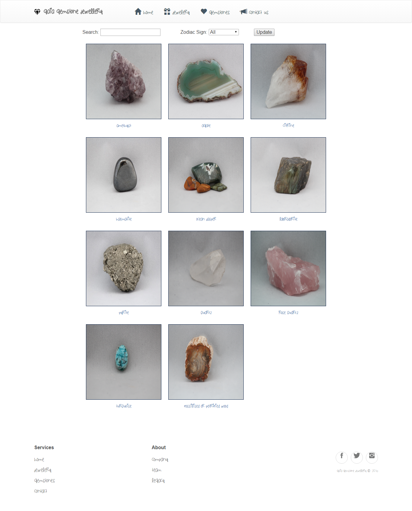
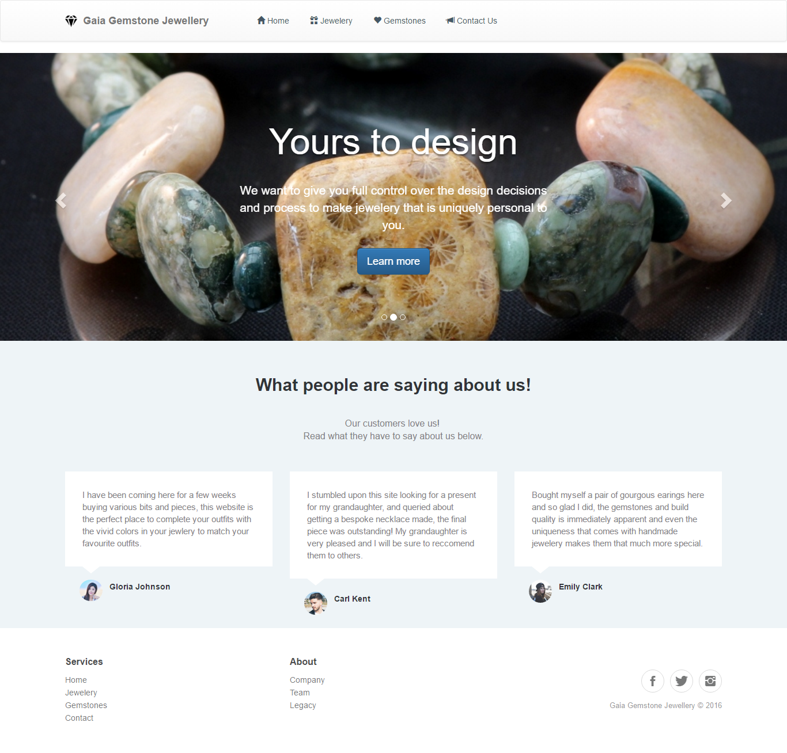
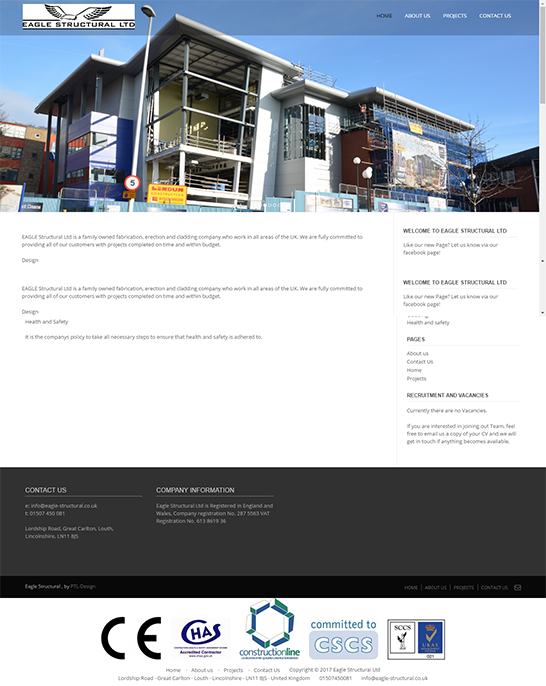
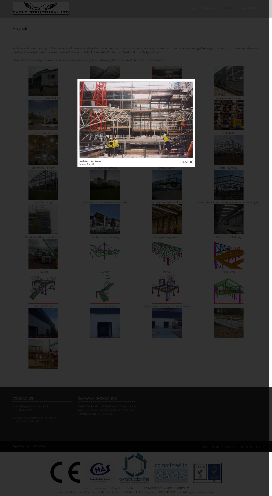
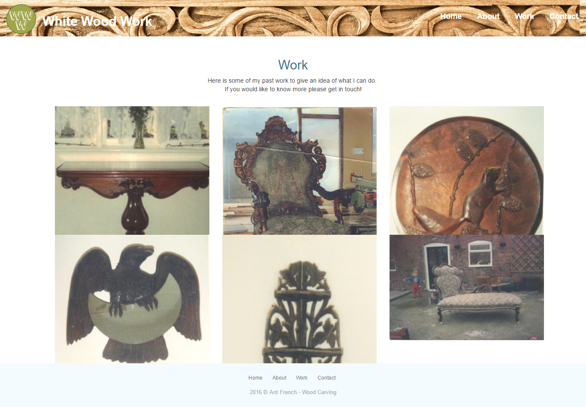
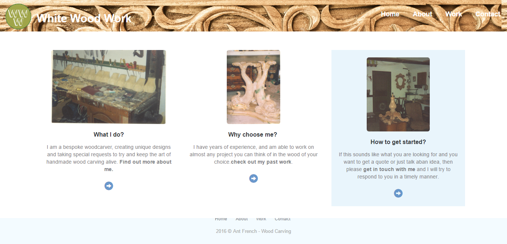
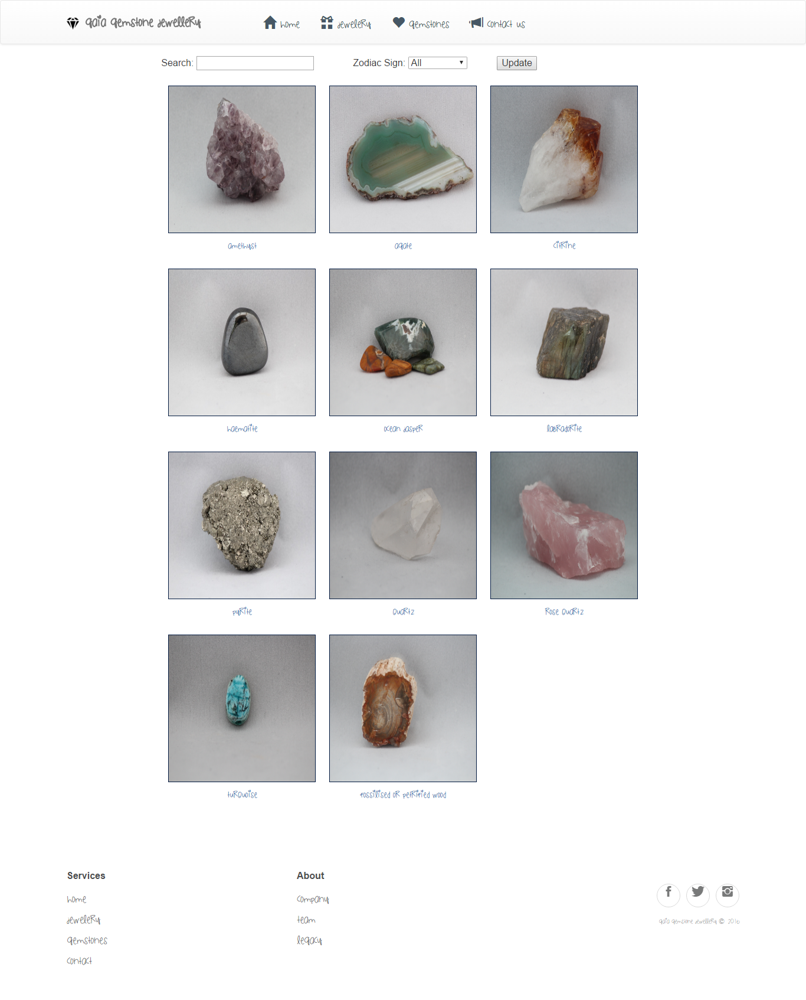
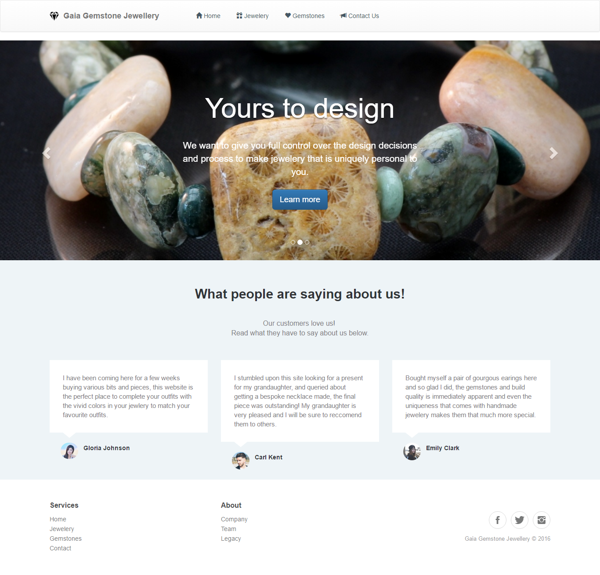
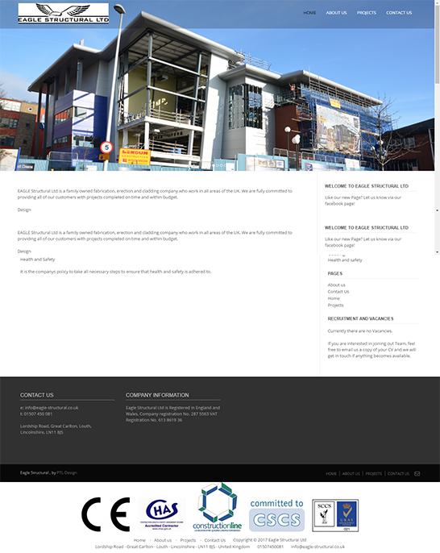
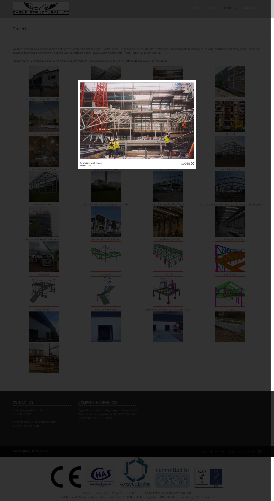
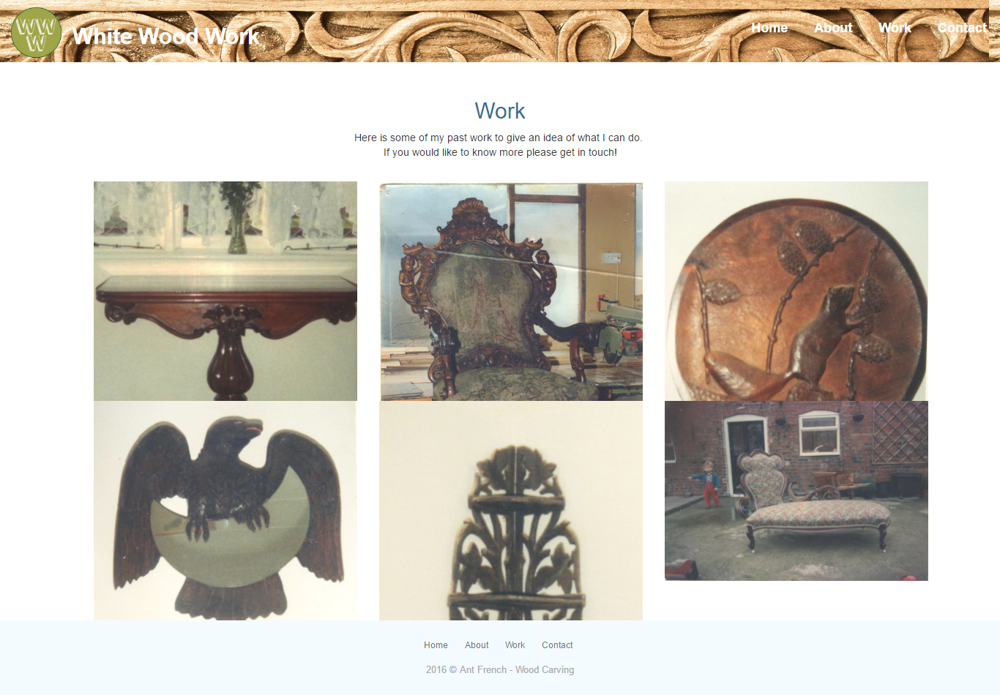
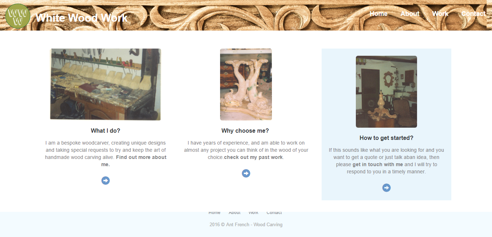